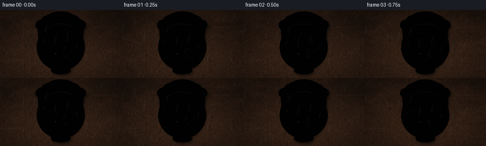
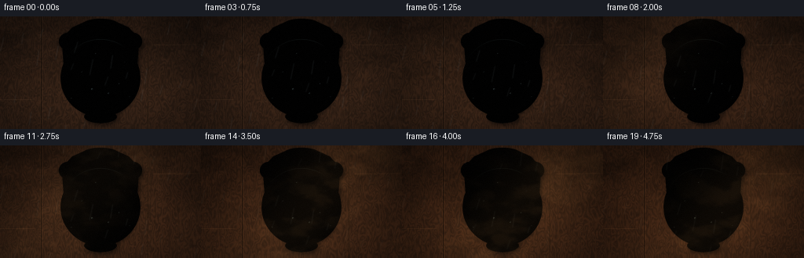
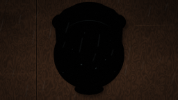

CODING AGENTS AS PIXEL WORLD MODELS
traex/DeepSeek-V4.1-Flash · material_0046
点击播放 · 原生 RGB 像素
此结果可播放，但该运行尚未通过最终提交审核。页面展示不代表评测通过。
逐轮保存的候选
回放视频、检查图与代码变化。
每份候选均可单独播放。实际图片检查记录在下方工具轨迹中。
候选 01播放与检查图
点击播放 · 原生 RGB 像素


展开代码变化
--- 上一保存版本
+++ 本次保存版本
@@ -0,0 +1,442 @@
+from pathlib import Path
+
+import cv2
+import numpy as np
+from PIL import Image, ImageDraw, ImageFilter
+from scipy.ndimage import distance_transform_edt, gaussian_filter
+
+import artifact_io
+
+
+ROOT = Path(__file__).resolve().parent
+WIDTH, HEIGHT = 256, 144
+FRAMES = 20
+FPS = 4.0
+SS = 3
+W, H = WIDTH * SS, HEIGHT * SS
+ASPECT = WIDTH / HEIGHT
+
+
+def smoothstep(edge0, edge1, x):
+ t = np.clip((x - edge0) / (edge1 - edge0), 0.0, 1.0)
+ return t * t * (3.0 - 2.0 * t)
+
+
+def normalize01(a):
+ lo, hi = float(a.min()), float(a.max())
+ return (a - lo) / max(hi - lo, 1e-6)
+
+
+def smooth_noise(rng, shape, cells, stretch=(1.0, 1.0)):
+ h, w = shape
+ small_h = max(3, int(cells / stretch[0]))
+ small_w = max(3, int(cells / stretch[1]))
+ small = rng.random((small_h, small_w), dtype=np.float32)
+ return cv2.resize(small, (w, h), interpolation=cv2.INTER_CUBIC)
+
+
+def fractal_field(rng, shape, cells=8):
+ field = (
+ smooth_noise(rng, shape, cells) * 0.53
+ + smooth_noise(rng, shape, cells * 2) * 0.28
+ + smooth_noise(rng, shape, cells * 4) * 0.13
+ + smooth_noise(rng, shape, cells * 8) * 0.06
+ )
+ return normalize01(gaussian_filter(field, 1.2))
+
+
+def mask_from_draw(draw_ops):
+ image = Image.new("L", (W, H), 0)
+ draw = ImageDraw.Draw(image)
+ draw_ops(draw)
+ return np.asarray(image, dtype=np.float32) / 255.0
+
+
+def px(x, y):
+ return (x * W, y * H)
+
+
+def box(draw, x0, y0, x1, y1, fill=255):
+ draw.rectangle((x0 * W, y0 * H, x1 * W, y1 * H), fill=fill)
+
+
+def ellipse(draw, cx, cy, rx, ry, fill=255):
+ draw.ellipse(
+ ((cx - rx) * W, (cy - ry) * H, (cx + rx) * W, (cy + ry) * H),
+ fill=fill,
+ )
+
+
+def surface_normals(mask, edge_pixels, relief, strength):
+ dist = distance_transform_edt(mask > 0.5)
+ bevel = np.sqrt(np.clip(dist / edge_pixels, 0.0, 1.0))
+ height = bevel * 0.92 + relief * 0.09
+ gy, gx = np.gradient(height)
+ nx = -gx * strength
+ ny = -gy * strength
+ nz = np.ones_like(nx)
+ length = np.sqrt(nx * nx + ny * ny + nz * nz)
+ return nx / length, ny / length, nz / length, dist
+
+
+def light_surface(nx, ny, nz, light, base, roughness=1.0):
+ diffuse = np.clip(nx * light[0] + ny * light[1] + nz * light[2], 0.0, 1.0)
+ half = np.array(light, dtype=np.float32) + np.array([0.0, 0.0, 1.0], dtype=np.float32)
+ half /= np.linalg.norm(half)
+ spec = np.clip(nx * half[0] + ny * half[1] + nz * half[2], 0.0, 1.0)
+ spec = spec ** (38.0 * roughness)
+ return base * (0.27 + 0.88 * diffuse[..., None]) + spec[..., None] * np.array(
+ [0.82, 0.66, 0.43], dtype=np.float32
+ )
+
+
+def composite(dst, rgb, alpha):
+ a = np.clip(alpha, 0.0, 1.0)[..., None]
+ return dst * (1.0 - a) + rgb * a
+
+
+def render_frame(frame_index):
+ rng = np.random.default_rng(2309 + frame_index * 17)
+ yy, xx = np.mgrid[0:H, 0:W].astype(np.float32)
+ xn = xx / (W - 1)
+ yn = yy / (H - 1)
+ progress = frame_index / (FRAMES - 1)
+ exposure = smoothstep(0.02, 0.96, progress)
+
+ # Weathered, vertically planked door with warped grain.
+ broad = smooth_noise(rng, (H, W), 6, stretch=(1.0, 0.35))
+ warp = smooth_noise(rng, (H, W), 20, stretch=(1.0, 0.25))
+ fine = smooth_noise(rng, (H, W), 52, stretch=(1.0, 0.2))
+ phase = xn * 31.0 + 2.3 * warp + 0.28 * np.sin(yn * 19.0 + broad * 4.0)
+ grain = 0.5 + 0.5 * np.sin(phase * np.pi * 2.0)
+ grain = 0.67 * grain + 0.33 * fine
+ board_var = 0.88 + 0.18 * broad
+ wood_r = 43.0 + 25.0 * grain * board_var
+ wood_g = 27.0 + 14.0 * grain * board_var
+ wood_b = 17.0 + 8.0 * grain * board_var
+ scene = np.stack((wood_r, wood_g, wood_b), axis=-1)
+ scene *= (0.78 + 0.22 * smoothstep(0.0, 0.85, yn))[..., None]
+
+ # Board seams and their worn edges.
+ for seam in (0.205, 0.735):
+ d = np.abs(xn - seam)
+ seam_dark = np.exp(-(d / 0.0022) ** 2)
+ seam_light = np.exp(-((d - 0.0030) / 0.0014) ** 2)
+ scene *= (1.0 - 0.72 * seam_dark[..., None])
+ scene += seam_light[..., None] * np.array([25.0, 16.0, 9.0], dtype=np.float32)
+
+ # Soft outdoor foliage shadows along the edges.
+ foliage = fractal_field(rng, (H, W), 7)
+ foliage_edge = smoothstep(0.22, 0.58, foliage) * np.clip(
+ 1.0 - 0.8 * np.minimum(xn, 1.0 - xn) / 0.45, 0.0, 1.0
+ )
+ foliage_edge *= np.clip(1.25 - yn * 1.4, 0.0, 1.0)
+ scene *= (1.0 - 0.24 * foliage_edge[..., None])
+
+ # A few shallow door scratches catch the changing light.
+ scratch = np.zeros((H, W), dtype=np.float32)
+ for cx, cy, length, slope in ((0.08, 0.74, 0.10, 0.012), (0.88, 0.25, 0.13, -0.008)):
+ yline = cy + slope * (xn - cx)
+ scratch += np.exp(-((yn - yline) / 0.0015) ** 2) * smoothstep(
+ cx - length, cx - length * 0.82, xn
+ ) * (1.0 - smoothstep(cx + length * 0.72, cx + length, xn))
+ scene += scratch[..., None] * np.array([36.0, 25.0, 15.0], dtype=np.float32)
+
+ # Ornate shield-shaped escutcheon.
+ plate_polygon = [
+ (0.426, 0.045),
+ (0.574, 0.045),
+ (0.640, 0.098),
+ (0.692, 0.198),
+ (0.676, 0.584),
+ (0.632, 0.773),
+ (0.556, 0.887),
+ (0.500, 0.950),
+ (0.444, 0.887),
+ (0.368, 0.773),
+ (0.324, 0.584),
+ (0.308, 0.198),
+ (0.360, 0.098),
+ ]
+
+ def plate_ops(draw):
+ draw.polygon([(x * W, y * H) for x, y in plate_polygon], fill=255)
+ ellipse(draw, 0.500, 0.068, 0.085, 0.046)
+ ellipse(draw, 0.338, 0.222, 0.044, 0.075)
+ ellipse(draw, 0.662, 0.222, 0.044, 0.075)
+ ellipse(draw, 0.500, 0.890, 0.080, 0.055)
+
+ plate = mask_from_draw(plate_ops)
+ plate = gaussian_filter(plate, 0.65)
+ shadow_plate = np.roll(np.roll(plate, 10, axis=0), 7, axis=1)
+ shadow_plate = gaussian_filter(shadow_plate, 8.0)
+ scene *= (1.0 - 0.52 * shadow_plate[..., None])
+
+ plate_noise = fractal_field(rng, (H, W), 16)
+ plate_relief = (plate_noise - 0.5) * 0.8
+ nx, ny, nz, plate_dist = surface_normals(plate, 17.0, plate_relief, 2.3)
+ light = np.array([-0.48, -0.70, 0.53], dtype=np.float32)
+ light /= np.linalg.norm(light)
+ plate_base = np.stack(
+ (
+ 0.285 + 0.075 * plate_noise,
+ 0.205 + 0.060 * plate_noise,
+ 0.125 + 0.042 * plate_noise,
+ ),
+ axis=-1,
+ ).astype(np.float32)
+ plate_rgb = light_surface(nx, ny, nz, light, plate_base, roughness=1.0)
+
+ # Raised rim, recessed field, and darker crevices.
+ rim = smoothstep(3.0, 9.0, plate_dist) * (1.0 - smoothstep(10.0, 20.0, plate_dist))
+ recess = 1.0 - smoothstep(22.0, 27.0, plate_dist)
+ plate_rgb += rim[..., None] * np.array([0.15, 0.105, 0.050], dtype=np.float32)
+ plate_rgb *= (1.0 - 0.16 * recess[..., None])
+ scene = composite(scene, plate_rgb, plate * 0.99)
+
+ # Embossed border line and floral corner bosses.
+ border = (
+ smoothstep(14.0, 17.0, plate_dist)
+ * (1.0 - smoothstep(17.0, 20.0, plate_dist))
+ * plate
+ )
+ scene += border[..., None] * np.array([0.105, 0.078, 0.036], dtype=np.float32)
+ corner_light = np.zeros((H, W), dtype=np.float32)
+ for cx, cy in ((0.398, 0.132), (0.602, 0.132), (0.405, 0.795), (0.595, 0.795)):
+ qx = (xn - cx) * ASPECT
+ qy = yn - cy
+ radius = np.sqrt(qx * qx + qy * qy)
+ corner_light += np.exp(-((radius - 0.027) / 0.006) ** 2)
+ scene += corner_light[..., None] * np.array([0.12, 0.086, 0.037], dtype=np.float32)
+
+ # The heavy hanging ring, modeled as a shaded torus.
+ qx = (xn - 0.500) * ASPECT
+ qy = (yn - 0.548) * 1.025
+ radius = np.sqrt(qx * qx + qy * qy)
+ ring_outer = 0.355
+ ring_inner = 0.294
+ ring_mask = (
+ smoothstep(ring_outer, ring_outer - 0.0022, radius)
+ * smoothstep(ring_inner - 0.0022, ring_inner + 0.0010, radius)
+ )
+ ring_shadow = np.roll(np.roll(ring_mask, 8, axis=0), 6, axis=1)
+ ring_shadow = gaussian_filter(ring_shadow, 5.0)
+ scene *= (1.0 - 0.35 * ring_shadow[..., None] * plate[..., None])
+
+ mid_r = (ring_outer + ring_inner) * 0.5
+ half_t = (ring_outer - ring_inner) * 0.5
+ radial_s = np.clip((radius - mid_r) / half_t, -1.0, 1.0)
+ theta = np.arctan2(qy, qx)
+ torus_z = np.sqrt(np.clip(1.0 - radial_s * radial_s, 0.0, 1.0))
+ inv_r = 1.0 / np.maximum(radius, 1e-6)
+ rnx = qx * inv_r * radial_s * 0.92
+ rny = qy * inv_r * radial_s * 0.92
+ rnz = torus_z + 0.08
+ groove = np.sin((radius - mid_r) / 0.0095 * np.pi * 2.0) * np.exp(
+ -((radius - mid_r) / 0.026) ** 2
+ )
+ rnx += qx * inv_r * groove * 0.14
+ rny += qy * inv_r * groove * 0.14
+ length = np.sqrt(rnx * rnx + rny * rny + rnz * rnz)
+ rnx, rny, rnz = rnx / length, rny / length, rnz / length
+
+ ring_noise = fractal_field(rng, (H, W), 20)
+ ring_base = np.stack(
+ (
+ 0.41 + 0.055 * ring_noise,
+ 0.305 + 0.045 * ring_noise,
+ 0.165 + 0.025 * ring_noise,
+ ),
+ axis=-1,
+ ).astype(np.float32)
+ ring_rgb = light_surface(rnx, rny, rnz, light, ring_base, roughness=0.68)
+
+ # Fine cast flutes and a dark center groove make the ring read as forged metal.
+ flute = 0.5 + 0.5 * np.cos(theta * 74.0 + 0.7 * np.sin(theta * 7.0))
+ ring_rgb *= (0.94 + 0.06 * flute)[..., None]
+ center_groove = np.exp(-((radius - mid_r) / 0.0032) ** 2)
+ ring_rgb *= (1.0 - 0.32 * center_groove[..., None])
+
+ # Oxidation fields are shared by the plate and ring, then advanced by time.
+ patina_field = fractal_field(rng, (H, W), 10)
+ patina_detail = fractal_field(rng, (H, W), 27)
+ rust_field = fractal_field(rng, (H, W), 13)
+ edge_bias = 0.12 * (1.0 - np.exp(-plate_dist / 15.0))
+ lower_bias = 0.10 * smoothstep(0.44, 0.88, yn)
+ patina_score = 0.73 * patina_field + 0.17 * patina_detail + edge_bias + lower_bias
+ green_threshold = 0.76 - 0.38 * exposure
+ patina = smoothstep(green_threshold - 0.035, green_threshold + 0.070, patina_score)
+ patina *= (0.55 + 0.45 * smoothstep(0.18, 0.95, exposure))
+ rust_score = 0.82 * rust_field + 0.13 * patina_field + 0.12 * lower_bias
+ rust_threshold = 0.89 - 0.31 * exposure
+ rust = smoothstep(rust_threshold - 0.025, rust_threshold + 0.080, rust_score)
+ rust *= smoothstep(0.10, 0.85, exposure)
+
+ verdigris = np.stack(
+ (
+ 0.14 + 0.17 * patina_detail,
+ 0.34 + 0.25 * patina_detail,
+ 0.29 + 0.20 * patina_detail,
+ ),
+ axis=-1,
+ ).astype(np.float32)
+ rust_color = np.stack(
+ (
+ 0.39 + 0.18 * patina_detail,
+ 0.18 + 0.10 * patina_detail,
+ 0.075 + 0.035 * patina_detail,
+ ),
+ axis=-1,
+ ).astype(np.float32)
+
+ metal_patina_alpha = patina * (0.38 + 0.62 * plate)
+ ring_rgb = composite(ring_rgb, verdigris, patina * 0.78)
+ ring_rgb = composite(ring_rgb, rust_color, rust * 0.46)
+ ring_rgb *= (1.0 - 0.30 * (patina + rust))[..., None]
+
+ scene = composite(scene, plate_rgb, plate)
+ plate_rgb = composite(plate_rgb, verdigris, metal_patina_alpha * plate * 0.74)
+ plate_rgb = composite(plate_rgb, rust_color, rust * plate * 0.44)
+ scene = composite(scene, plate_rgb, plate)
+ scene = composite(scene, ring_rgb, ring_mask)
+
+ # Raised hinge boss at the top of the ring.
+ def boss_ops(draw):
+ ellipse(draw, 0.500, 0.225, 0.072, 0.060)
+ draw.polygon(
+ [
+ (0.465 * W, 0.215 * H),
+ (0.535 * W, 0.215 * H),
+ (0.555 * W, 0.310 * H),
+ (0.500 * W, 0.340 * H),
+ (0.445 * W, 0.310 * H),
+ ],
+ fill=255,
+ )
+
+ boss = mask_from_draw(boss_ops)
+ boss = gaussian_filter(boss, 0.55)
+ boss_shadow = np.roll(np.roll(boss, 7, axis=0), 4, axis=1)
+ boss_shadow = gaussian_filter(boss_shadow, 5.0)
+ scene *= (1.0 - 0.30 * boss_shadow[..., None])
+ boss_relief = (fractal_field(rng, (H, W), 22) - 0.5) * 0.7
+ bnx, bny, bnz, boss_dist = surface_normals(boss, 13.0, boss_relief, 2.7)
+ boss_base = np.stack(
+ (
+ 0.35 + 0.06 * boss_relief,
+ 0.245 + 0.045 * boss_relief,
+ 0.135 + 0.025 * boss_relief,
+ ),
+ axis=-1,
+ ).astype(np.float32)
+ boss_rgb = light_surface(bnx, bny, bnz, light, boss_base, roughness=0.72)
+ boss_rgb = composite(boss_rgb, verdigris, patina * 0.62)
+ boss_rgb = composite(boss_rgb, rust_color, rust * 0.38)
+ scene = composite(scene, boss_rgb, boss)
+
+ # Central medallion and its dark seam.
+ medallion_q = np.sqrt(((xn - 0.5) * ASPECT) ** 2 + (yn - 0.224) ** 2)
+ medallion = smoothstep(0.048, 0.044, medallion_q) * boss
+ medallion_ring = np.exp(-((medallion_q - 0.049) / 0.0035) ** 2) * boss
+ scene *= (1.0 - 0.25 * medallion_ring[..., None])
+ med_glint = np.clip(
+ 1.0 - np.sqrt(((xn - 0.487) * ASPECT / 0.031) ** 2 + ((yn - 0.208) / 0.031) ** 2),
+ 0.0,
+ 1.0,
+ )
+ scene += (medallion * med_glint)[..., None] * np.array([0.14, 0.10, 0.045], dtype=np.float32)
+
+ # Wet gleams and beads on exposed metal.
+ bead_list = [
+ (0.458, 0.646, 0.010, 0.72),
+ (0.540, 0.684, 0.008, 0.70),
+ (0.592, 0.598, 0.006, 0.65),
+ (0.407, 0.494, 0.005, 0.55),
+ (0.621, 0.404, 0.004, 0.48),
+ (0.476, 0.329, 0.006, 0.50),
+ (0.355, 0.727, 0.006, 0.45),
+ (0.645, 0.714, 0.005, 0.40),
+ ]
+ wet_amount = 0.88 - 0.35 * exposure
+ for bx, by, br, strength in bead_list:
+ qx = (xn - bx) * ASPECT
+ qy = yn - by
+ d = np.sqrt(qx * qx + qy * qy)
+ bead = np.exp(-(d / br) ** 6) * wet_amount * strength
+ scene *= (1.0 - 0.20 * bead[..., None])
+ glint = np.exp(-((d - br * 0.48) / (br * 0.19)) ** 2)
+ glint *= np.clip(0.55 - (qx + qy) / max(br, 1e-5), 0.0, 1.0)
+ scene += bead[..., None] * np.array([16.0, 22.0, 24.0], dtype=np.float32)
+ scene += glint[..., None] * np.array([95.0, 105.0, 94.0], dtype=np.float32) * strength
+
+ # Water running off the lower arc of the ring.
+ run = np.exp(-((radius - (ring_outer - 0.0015)) / 0.0030) ** 2)
+ run *= smoothstep(-2.8, -1.45, theta) * (1.0 - smoothstep(-1.28, -0.86, theta))
+ run *= wet_amount * 0.55
+ scene += run[..., None] * np.array([30.0, 37.0, 35.0], dtype=np.float32)
+
+ # Fine rain and a few out-of-focus foreground drops.
+ rain_layer = Image.new("RGBA", (W, H), (0, 0, 0, 0))
+ rd = ImageDraw.Draw(rain_layer)
+ rain_alpha = int(86 - 48 * exposure)
+ for i in range(28):
+ base_x = ((i * 0.173 + 0.041) % 1.0) * W
+ speed = 0.24 + (i % 7) * 0.025
+ y0 = (((i * 0.117 + 0.11) + progress * speed) % 1.25 - 0.12) * H
+ length = (9 + (i % 5) * 3) * SS
+ slope = (2.5 + (i % 3)) * SS
+ alpha = rain_alpha + (i % 4) * 7
+ rd.line(
+ (base_x, y0, base_x - slope, y0 + length),
+ fill=(176, 194, 190, max(18, alpha)),
+ width=SS,
+ )
+ rain_layer = rain_layer.filter(ImageFilter.GaussianBlur(0.7 * SS))
+ rain = np.asarray(rain_layer, dtype=np.float32) / 255.0
+ scene = scene * (1.0 - 0.32 * rain[..., 3:4]) + rain[..., :3] * 255.0 * rain[..., 3:4] * 0.72
+
+ # Moving dappled sunlight and a gradual cool-to-warm exposure shift.
+ beam_center = 0.18 + 0.72 * smoothstep(0.12, 0.92, progress)
+ beam = np.exp(-((xn + yn * 0.48 - beam_center) / 0.28) ** 2)
+ beam *= smoothstep(0.18, 0.78, progress)
+ dapple = smoothstep(0.38, 0.76, fractal_field(rng, (H, W), 11))
+ scene += (beam * (0.55 + 0.45 * dapple) * 23.0)[..., None] * np.array(
+ [1.00, 0.73, 0.42], dtype=np.float32
+ )
+ scene *= np.array(
+ [
+ 0.92 + 0.13 * exposure,
+ 0.96 + 0.02 * exposure,
+ 1.02 - 0.14 * exposure,
+ ],
+ dtype=np.float32,
+ )
+
+ # Lens vignette and restrained per-frame grain.
+ vx = (xn - 0.5) * 1.08
+ vy = (yn - 0.5) * 0.92
+ vignette = 1.0 - 0.34 * smoothstep(0.24, 0.72, np.sqrt(vx * vx + vy * vy))
+ scene *= vignette[..., None]
+ grain = rng.normal(0.0, 2.2, (H, W, 1)).astype(np.float32)
+ scene += grain
+ scene = np.clip(scene, 0.0, 255.0)
+ small = cv2.resize(scene, (WIDTH, HEIGHT), interpolation=cv2.INTER_AREA)
+ return np.clip(small + 0.5, 0, 255).astype(np.uint8)
+
+
+def main():
+ frames = np.stack([render_frame(i) for i in range(FRAMES)])
+ artifact_io.save(frames, ROOT)
+
+ # A convenient review copy; the contract artifacts are produced by artifact_io.save.
+ try:
+ import imageio.v2 as imageio
+
+ imageio.mimsave(ROOT / "oxidation_timelapse.mp4", frames, fps=FPS, quality=8)
+ except Exception as exc:
+ print(f"MP4 preview not written: {exc}")
+ print(f"Wrote {FRAMES} frames at {WIDTH}x{HEIGHT}, {FPS} fps")
+
+
+if __name__ == "__main__":
+ main()
可观测工具轨迹
实际执行的命令与返回图片。
命令 1exit 0
/bin/bash -c 'ls -la'
命令 2exit 0
/bin/bash -c "pwd && rg --files -g 'prompt.txt' -g 'GENERATION_RULES.md' -g 'task_spec.json' -g '"'!node_modules'"' -g '"'!vendor'"'"
命令 3exit 0
/bin/bash -c 'cat GENERATION_RULES.md'
命令 4exit 0
/bin/bash -c 'cat task_spec.json'
命令 5exit 0
/bin/bash -c 'cat prompt.txt'
命令 6exit 0
/bin/bash -c "sed -n '1,240p' artifact_io.py"
命令 7exit 0
/bin/bash -c "sed -n '1,260p' player_template.html"
命令 8exit 0
/bin/bash -c "python - <<'PY'
import importlib.util
for m in ['numpy','PIL','scipy','cv2','imageio','moviepy']:
print(m, bool(importlib.util.find_spec(m)))
PY"命令 9exit 0
/bin/bash -c 'ffmpeg -version | head -n 3'
命令 10exit 0
/bin/bash -c "find .tmp -maxdepth 2 -type f -printf '%p %s\\n' | head -50"
命令 11exit 0
/bin/bash -c "python - <<'PY'
import importlib.util
print('imageio_ffmpeg', bool(importlib.util.find_spec('imageio_ffmpeg')))
PY"命令 12exit 0
/bin/bash -c 'python generate.py'
视觉工具实际返回图片 1

视觉工具实际返回图片 2

保存候选 1 份；完成命令 12 次；可验证图片返回 2 张。原始 API 响应与完整日志保留在本地。